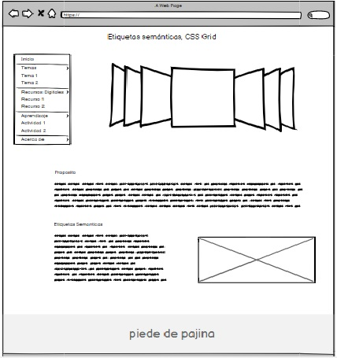

Etiquetas semánticas, CSS Grid
La nueva etiqueta se creó para reemplazar el abuso del elemento "div" que normalmente se usa para separar partes de un documento. Al usarlos, HTML5 tiene como objetivo crear una estructura de vista más homogénea y un manejo de metadatos más apropiado. El objetivo es habilitar la llamada "web semántica", haciendo que las presentaciones de documentos sean más coherentes, más fáciles de entender para otros y, lo que es más importante, más fáciles de entender para las máquinas. En concreto, la tarea de un buscador sería mucho más sencilla, pero también lo sería para cualquier aplicación que "lea" páginas web.
HTML5 incluye nuevas etiquetas para crear páginas web. Estos elementos, a menudo denominados elementos semánticos, se utilizan para dividir un documento en secciones lógicas, indicando el tipo de contenido en cada sección, representando así secciones lógicas o componentes de una aplicación o documento web. header, nav, article, section, aside, footer [9, 12, 16].
Tomado de: Diez, T., Domínguez, M. J., Martínez, J. J., & Sáenz, J. (2012). Creación de páginas Web accesibles con HTML5. Consultado el, 26.

pantallazo del mockup
